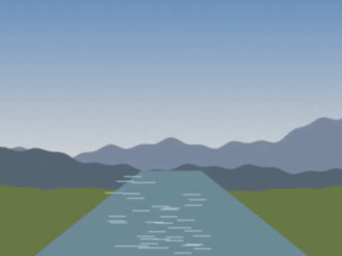
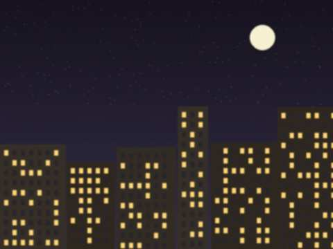

Archive for the ‘me’ Category
20.08.2009 22:00
mood: grown up?? · music: tüntolk (the happy one)
i got into the medical college. nurse. mama won. actually i won also, i want it now.
so this is the last post here probably. i will keep the blog for memory. if you are 16 and wearing black in talas: it gets better. and tüntolk is NOT just noise.
xX aika Xx
23.01.2009 19:30
mood: frozen · music: none (no electricity lol)
we have light only 2 hours in the evening. i do homework with a candle like in 1800. juju sleeps on the radiator but it is cold so she is confused.
writing this at the internet club, they have a generator. 20 som for half an hour.
30.08.2008 21:00
mood: weird · music: Mor-Wave
last year of school starts on monday. 12th class. the test. then life. how is it possible that 1st class was yesterday.
meerim and i are going to the river tomorrow to take photos with her new phone (it has 1.3 megapixels!!!)

the talas from the bridge. meerim's phone.15.12.2007 23:15
mood: dark · music: tüntolk (the sad one)
some boys from 11 "A" laughed at my eyeliner on the stairs. whatever. in 10 years they will be fat and boring and i will be an artist in Paris.
(or a nurse. mama says nurse.)
02.06.2007 20:45
mood: better · music: Mor-Wave
school is over. we are all ok. i am going to draw ALL summer and not think about anything.
new drawing: a girl with a lantern on the Talas bridge. took me 4 days. the eyes are the best eyes i ever drew. i will scan it at the photo shop when i have money.
22.02.2007 01:10
mood: scared · music: none
cant sleep. everyone is talking about the north. papa is on the phone with uncle all night. meerim if you read this call me tomorrow
30.12.2006 22:10
mood: ok · music: radio
we are going to meerim's for new year. her mum makes olivier and the plov. we will watch the concert on tv and then go out on the square at midnight with sparklers. my mum says be home by 1. MUM. it's NEW YEAR.

from meerim's balcony last year25.11.2006 23:40
mood: hyper · music: Kara Suu
ok so meerim showed me Kündölük has a NEW THEME just for us, its called Tün Jyldyz (night star) and its black and pink and it has a MARQUEE. i chose it immediately. meerim is jealous because she is on the old one with her own css hahaha.
this blog is about music and my life and my drawings. no parents allowed!!!